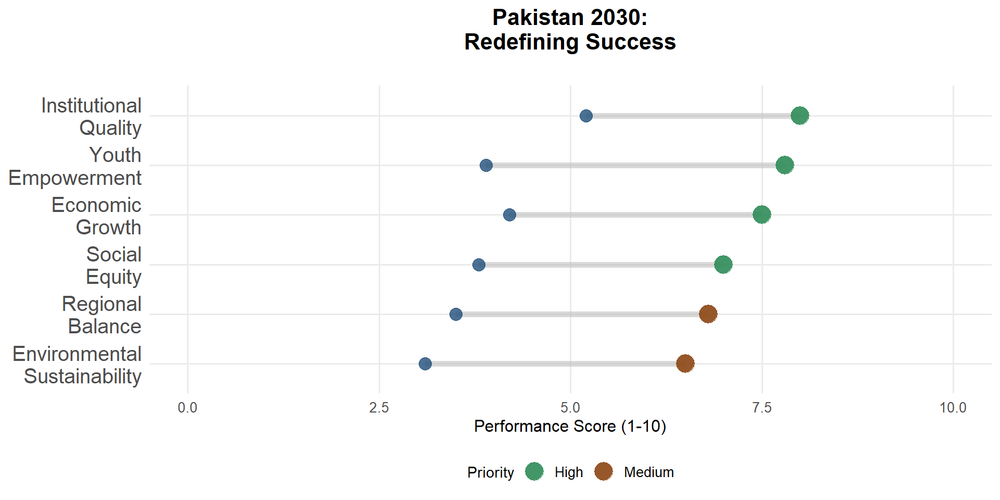
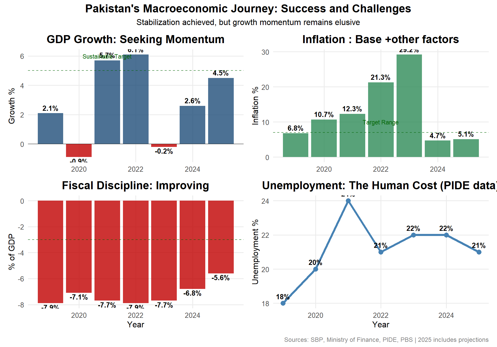
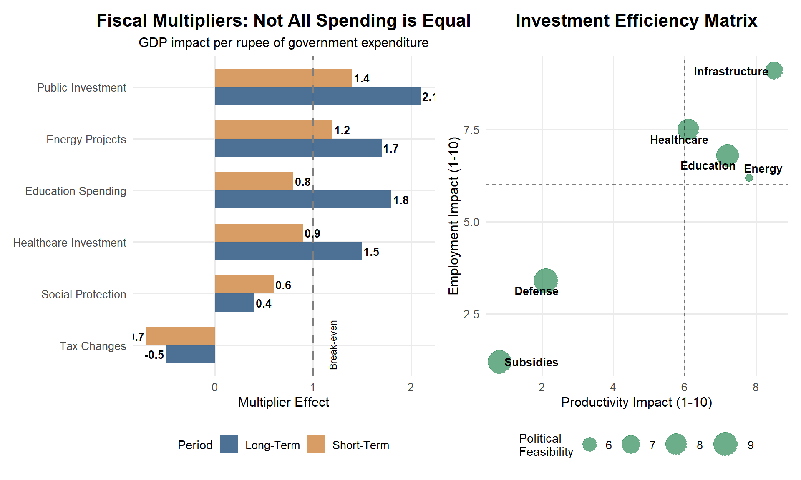
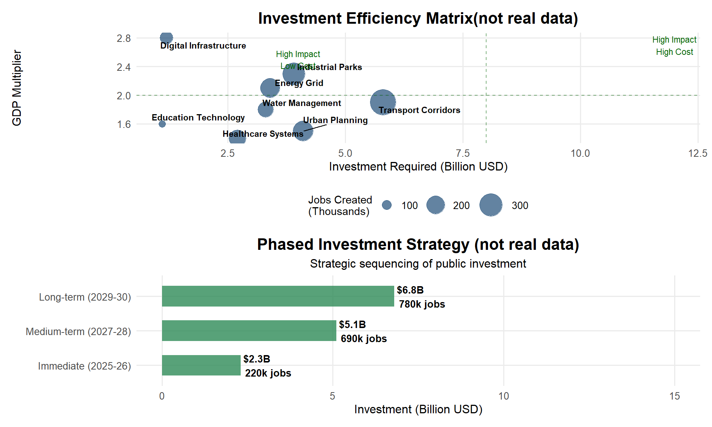
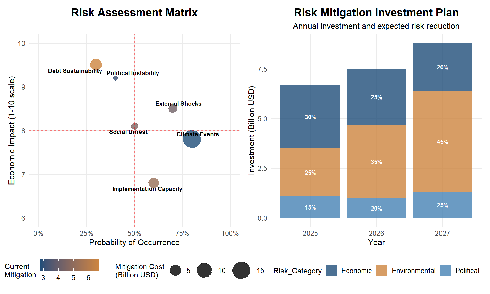

Growth on Hold? Questioning the Logic of Prolonged Stabilisation
Balancing short-term macroeconomic control with the long-term need for structural investment
Professor Dr. Zahid Asghar
School of Economics, Quaid-i-Azam University, Islamabad
2025-07-08
The Central Question
“Stabilization without growth is treating symptoms while the disease progresses.”
Three Critical Questions
What is Pakistan stabilising from? - Twin deficits, debt stress, inflation spiral
Who bears the cost of prolonged stabilisation? - Youth, SMEs, informal workers, provinces
Can we afford to delay growth? - Lost decade vs. managed transition
Pakistan’s Economic Transformation: The Numbers Tell a Story
Budget 2025: Stabilization at What Cost?
The Budget’s Message
- What it emphasizes: IMF targets, fiscal discipline, debt management
- What it marginalizes: Development investment, job creation, productivity enhancement
- What it reveals: A budget for survival, not transformation
The Krugman Insight: When Austerity Becomes a Trap
“Austerity in a depression is a trap — the more you cut, the weaker your economy becomes.” — Paul Krugman
The Austerity Paradox Applied to Pakistan
Traditional Logic:
Cut spending → Reduce deficit
Lower deficit → Restore confidence
Higher confidence → Private investment
More investment → Growth returns
Reality Check:
Cut spending → Reduce demand
Lower demand → Business contraction
Less business → Lower tax revenue
Revenue shortfall → More cuts needed
Fiscal Multipliers: The Mathematics of Policy Choice
Key Insight: Multipliers Matter More in Recessions
When private demand is weak, each rupee of public investment has outsized impact
International Lessons: When Stabilization Strategies Succeed or Fail
Case Study Insights
üáßüá© Bangladesh: Pragmatic Sequencing - Kept export incentives during stabilization - Protected social spending (health, education) - Result: 6%+ growth for over a decade
üá™üᨠEgypt: Austerity Trap - Deep cuts, rapid currency adjustment - Achieved macro stability but jobless growth - Social unrest forced policy reversal
üáπüá∑ Turkey: Stop-Go Cycles - Repeatedly chose short-term growth over stability - Result: Chronic inflation, currency crises - Lesson: Discipline matters, but so does sequencing
üá±üá∞ Sri Lanka: Late Adjustment - Delayed necessary reforms - Crisis became unavoidable - Extreme austerity with severe social costs
The Human Cost: Who Bears the Burden of Prolonged Stabilization?
The Distributional Question
Who pays for stabilization, and who benefits from it?
Rethinking Stabilization: A Growth-Compatible Framework
The Dual-Track Approach
- Track 1: Maintain macro discipline (fiscal, monetary, debt)
- Track 2: Strategic investments in growth foundations
- Key: Sequenced implementation, not either-or choice
Smart Public Investment: Where to Focus Resources
Policy Recommendations: A Roadmap for Balanced Growth
Immediate Actions (Next 12 Months)
üéØ Fiscal Rebalancing - Protect PSDP allocations for high-multiplier projects - Rationalize subsidies based on targeting effectiveness - Implement progressive taxation measures
üéØ Monetary Policy Coordination - Gradual policy rate reduction as inflation anchors - Develop SME-specific credit guarantee schemes - Strengthen monetary transmission mechanisms
üéØ Structural Enablers - Fast-track energy sector circular debt resolution - Streamline business registration and licensing - Launch export diversification incentive package
Medium-term Transformation (2-3 Years)
üéØ Investment Climate - Establish technology parks and innovation hubs - Develop skilled workforce through public-private partnerships - Create regional trade and investment facilitation centers
Risk Assessment and Mitigation Strategies
The Path Forward: A New Economic Social Contract
Redefining Success
Beyond Macro Indicators - GDP growth that creates jobs - Inflation control that preserves purchasing power
- Fiscal discipline that funds public goods - Trade balance that supports domestic industry
Toward Inclusive Prosperity - Regional development that reduces disparities - Education investment that builds human capital - Healthcare access that protects all citizens - Environmental protection that ensures sustainability
The New Social Contract
“Growth that works for everyone, not just the privileged few”
Conclusions: Growth Cannot Remain on Hold Forever
Key Insights from Today’s Analysis
✓ Pakistan has proven it can stabilize quickly when necessary - Inflation controlled, current account balanced, fiscal discipline restored
⚠️ But stabilization without growth is unsustainable - Social costs mount, productivity stagnates, political pressures build
üéØ The solution: Smart sequencing, not either-or choices - Dual-track approach balancing macro stability with strategic investment
üí° Success requires redefining the economic development model - From crisis management to strategic transformation
- From being COSMOPOLITAN to being PEOPLE-CENTRIC
The Bottom Line
Pakistan stands at a crossroads. It can continue on the path of perpetual stabilization, achieving fiscal targets while the economy stagnates. Or it can leverage its hard-won stability to launch a new phase of inclusive, sustainable growth. The choice will define the next decade.
Discussion Questions
For Reflection and Debate
Political Economy: What political incentives keep Pakistan in prolonged stabilization mode, and how can they be changed?
International Relations: Can Pakistan negotiate more growth-friendly conditionalities with international financial institutions?
Federal Structure: How can provincial governments become growth engines while maintaining fiscal discipline?
Private Sector: What role should the private sector play in Pakistan’s transformation, and what support does it need?
Timeline: Is a 6-year transformation timeline realistic, or should Pakistan think in terms of decades?
Thank You
Contact Information: - Email: [your.email@university.edu] - LinkedIn: [Your LinkedIn Profile] - Research Gate: [Your Research Profile]
“When a country cuts back on investment in people and progress to meet a short-term fiscal target, it mortgages its future.”
Table 1
|
||
|---|---|---|
| As of June: | Total Government Debt (as percent of GDP) | Share of External Debt (percent) |
| 2009 | 52.6 | 51.2 |
| 2019 | 68.8 | 33.8 |
| 2021 | 71.4 | 31.2 |
| 2022 | 68.8 | 34.0 |
| 2023 | 74.9 | 35.0 |
| 2024 | 67.5 | 30.5 |
| Source: SBP | ||
For analysis and visualization
Figure 1: Pakistan’s Debt Composition Trends

Post-Budget Economic Analysis | School of Economics